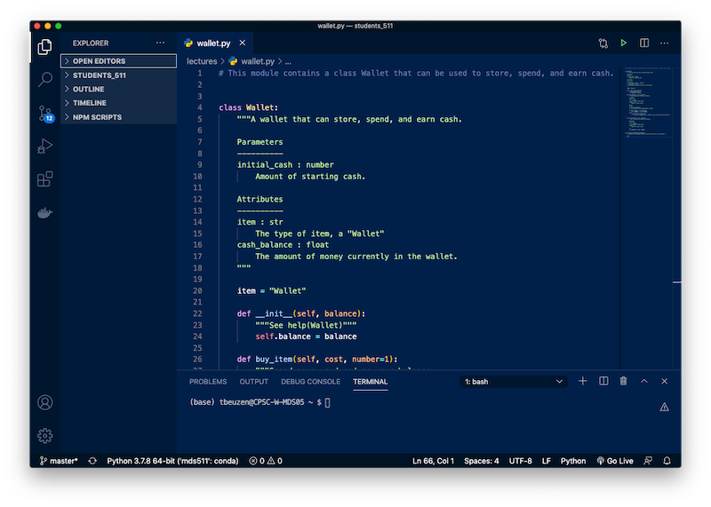
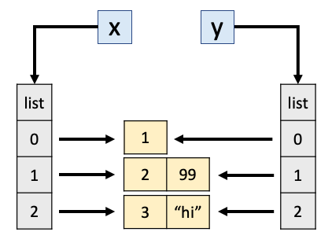
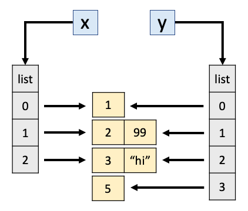

Lecture 4: Style Guides, Scripts, Imports¶
Tomas Beuzen, September 2020
Lecture Outline
Lecture Learning Objectives¶
Describe why code style is important
Differentiate between the role of a linter like
flake8and an autoformatter likeblackImplement linting and formatting from the command line or within Jupyter or another IDE
Write a Python module (
.pyfile) in VSCode or other IDE of your choiceImport installed or custom packages using the
importsyntaxExplain the notion of a reference in Python
Explain the notion of scoping in Python
Anticipate whether changing one variable will change another in Python
Anticipate whether a function changes the caller’s version of an argument variable in Python
Select the appropriate choice between
==andisin Python
1. Style Guide¶

It is incorrect to think that if your code works then you are done.
Code has two “users” - the computer (which turns it into machine instructions) and humans, who will likely read and/or modify the code in the future.
This section is about how to make your code suitable to that second audience, humans.
Styling is particularly important for sharing your code to other users (including your future self!)
Remember: “Code is read much more often than it is written.”
PEP8 is the Python Style Guide
It is worth skimming through PEP 8, but here are some highlights:
Indent using 4 spaces
Have whitespace around operators, e.g.
x = 1notx=1But avoid extra whitespace, e.g.
f(1)notf (1)Single and double quotes both fine for strings, but use
"""triple double quotes"""for docstrings, not'''triple single quotes'''Variable and function names use
underscores_between_wordsAnd much more…
There’s lots to remember but luckily linters & formatters can help you adhere to uniform styling!
Linters¶
Linting: highlights programmatic and stylistic problems in your Python source code.
Think of it like “spell check” in word processing software
Common linters: pycodestyle, pylint, pyflakes, flake8, etc.
We’ll use flake8 in MDS, which, if you don’t have it, you can install with:
conda install -c anaconda flake8
flake8can be used from the command line to check files
flake8 path/file_to_check.py
You can execute shell commands in Jupyter by prepending a command with an exclamation mark
!I’ve included an example script called
bad_style.pyin the lectures folder, let’s useflake8on that now:
!flake8 lecture4-bad_style.py
lecture4-bad_style.py:1:6: E201 whitespace after '{'
lecture4-bad_style.py:1:11: E231 missing whitespace after ':'
lecture4-bad_style.py:1:14: E231 missing whitespace after ','
lecture4-bad_style.py:1:18: E231 missing whitespace after ':'
lecture4-bad_style.py:2:1: E128 continuation line under-indented for visual indent
lecture4-bad_style.py:2:4: E231 missing whitespace after ':'
lecture4-bad_style.py:4:25: E128 continuation line under-indented for visual indent
lecture4-bad_style.py:5:5: E225 missing whitespace around operator
lecture4-bad_style.py:7:80: E501 line too long (119 > 79 characters)
lecture4-bad_style.py:8:2: E111 indentation is not a multiple of four
lecture4-bad_style.py:10:2: E111 indentation is not a multiple of four
lecture4-bad_style.py:11:2: E111 indentation is not a multiple of four
lecture4-bad_style.py:12:2: E111 indentation is not a multiple of four
lecture4-bad_style.py:13:10: E701 multiple statements on one line (colon)
lecture4-bad_style.py:13:31: E261 at least two spaces before inline comment
lecture4-bad_style.py:13:31: E262 inline comment should start with '# '
lecture4-bad_style.py:14:1: E302 expected 2 blank lines, found 0
lecture4-bad_style.py:14:13: E201 whitespace after '('
lecture4-bad_style.py:14:25: E202 whitespace before ')'
lecture4-bad_style.py:15:3: E111 indentation is not a multiple of four
lecture4-bad_style.py:15:8: E211 whitespace before '('
lecture4-bad_style.py:15:19: E202 whitespace before ')'
lecture4-bad_style.py:16:11: E271 multiple spaces after keyword
lecture4-bad_style.py:17:3: E301 expected 1 blank line, found 0
lecture4-bad_style.py:17:3: E111 indentation is not a multiple of four
lecture4-bad_style.py:17:16: E231 missing whitespace after ','
lecture4-bad_style.py:18:7: E111 indentation is not a multiple of four
lecture4-bad_style.py:20:1: E305 expected 2 blank lines after class or function definition, found 0
lecture4-bad_style.py:28:2: W292 no newline at end of file
You can also instruct your Python editor of choice to automatically lint your code as your write (I’ll show this in VSCode a little later)
Formatters¶
Formatting: restructures how code appears by applying specific rules for line spacing, indents, line length, etc.
Common linters: autopep8, black, yapf, etc.
We’ll use black in MDS, which, if you don’t have it, you can install with:
conda install -c conda-forge black
blackcan also be used from the command line to format your files:
black path/file_to_check.py --check
The
--checkargument just checks if your code conforms to black style but doesn’t reformat it in place, if you want your file reformatted, remove the argument.
!black lecture4-bad_style.py --check
would reformat lecture4-bad_style.py
Oh no! 💥 💔 💥
1 file would be reformatted.
You can instruct your IDE to use
blackto format your code automatically too (I’ll show this in VSCode a little later)There’s also a great
blackextension for JupyterLab which I’ll use to demonstrateblackusage below:
BEFORE FORMATTING:
x = { 'a':37,'b':42,
'c':927}
very_long_variable_name = {'field': 1,
'is_debug': True}
this=True
if very_long_variable_name is not None and very_long_variable_name["field"] > 0 or very_long_variable_name['is_debug']:
z = 'hello '+'world'
else:
world = 'world'
a = 'hello {}'.format(world)
f = rf'hello {world}'
if (this): y = 'hello ''world'#FIXME: https://github.com/python/black/issues/26
class Foo ( object ):
def f (self ):
return 37*-2
def g(self, x,y=42):
return y
# fmt: off
custom_formatting = [
0, 1, 2,
3, 4, 5
]
# fmt: on
regular_formatting = [
0, 1, 2,
3, 4, 5
]
AFTER FORMATTING (if you have the extension installed in JupyterLab:
Edit->Apply Black Formatter)Note how you can toggle formatting on or off in your code using the
# fmt: off/# fmt: ontags
x = {"a": 37, "b": 42, "c": 927}
very_long_variable_name = {"field": 1, "is_debug": True}
this = True
if (
very_long_variable_name is not None
and very_long_variable_name["field"] > 0
or very_long_variable_name["is_debug"]
):
z = "hello " + "world"
else:
world = "world"
a = "hello {}".format(world)
f = rf"hello {world}"
if this:
y = "hello " "world" # FIXME: https://github.com/python/black/issues/26
class Foo(object):
def f(self):
return 37 * -2
def g(self, x, y=42):
return y
# fmt: off
custom_formatting = [
0, 1, 2,
3, 4, 5
]
# fmt: on
regular_formatting = [0, 1, 2, 3, 4, 5]
Guidelines That Cannot Be Checked Automatically¶
Variable names should use underscores (PEP 8), but also need to make sense.
e.g.
spin_timesis a reasonable variable namemy_list_of_thingiesadheres to PEP 8 but is NOT a reasonable variable namesame for
lst- fine for explaining a concept, but not as part of a script that will be reused
DRY (we talked about this last week)
Magic numbers
Comments
Magic numbers¶
“Magic numbers” refer to the use of numbers directly wihtin source code that probably should be replaced with meaningfully, named constants
# Here "4" is a "magic number"
def num_labs(num_weeks):
"""Compute the number of labs and MDS student attends per week."""
return num_weeks * 4
In this function, the
num_weeksyou pass in will always be multipled by 4, you have no controlAnd if you did want to change how the function works, you’d have to go into the source code and change the number 4
# Better
def num_labs(num_weeks, labs_per_week=4):
"""Compute the number of labs and MDS student attends per week."""
return num_weeks * labs_per_week
# Also fine but I don't do this as much
LABS_PER_WEEK = 4
def num_labs(num_weeks):
"""Compute the number of labs and MDS student attends per week."""
return num_weeks * LABS_PER_WEEK
In the above,
LABS_PER_WEEKis being set as a “global constant”So, why avoid magic numbers?
They make the code hard to read. Once you give the number a name, the code is much clearer.
You may need to use them in multiple places, in which case you’d be violating DRY.
The worst situation:
def num_labs(num_weeks):
"""Compute the number of labs and MDS student attends per week."""
return num_weeks * 4
def num_wheels(num_cars):
"""Compute the number of wheels in a collection of num_cars cars."""
return num_cars * 4
And then one day MDS students take 3 labs per week so you, or someone else, goes and changes all the 4’s to 3’s:
def num_labs(num_weeks):
"""Compute the number of labs and MDS student attends per week."""
return num_weeks * 3
def num_wheels(num_cars):
"""Compute the number of wheels in a collection of num_cars cars."""
return num_cars * 3
That’s bad…
Comments¶
Comments are important for understanding your code.
While docstrings cover what a function does, your comments will help document how your code achieves its goal.
There are PEP 8 guidelines on the length, spacing, etc of comments.
Comments: should start with a
#followed by a single space and be preceded by at least two spaces.Block Comments: each line of a block comment should start with a
#followed by a single space and should be indented to the same level as the code it precedes.Generally, comments should not be unnecessarily verbose or just state the obvious, as this can be distracting and can actually make your code more difficult to read!
Here is an example of a reasonable comment:
def random_walker(T):
x = 0
y = 0
for i in range(T):
# Generate a random number between 0 and 1.
# Then, go right, left, up or down if the number
# is in the interval [0,0.25), [0.25,0.5),
# [0.5,0.75) or [0.75,1) respectively.
r = random()
if r < 0.25:
x += 1 # Go right
elif r < 0.5:
x -= 1 # Go left
elif r < 0.75:
y += 1 # Go up
else:
y -= 1 # Go down
print((x,y))
return x**2 + y**2
Here are some BAD EXAMPLES of comments, because they are unnecessary or poorly formatted:
def random_walker(T):
# intalize coords
x = 0
y = 0
for i in range(T):# loop T times
r = random()
if r < 0.25:
x += 1 # go right
elif r < 0.5:
x -= 1 # go left
elif r < 0.75:
y += 1 # go up
else:
y -= 1
# Print the location
print((x, y))
# In Python, the ** operator means exponentiation.
return x ** 2 + y ** 2
2. Python Scripts¶
Jupyter is a fantastic data science tool which allows you to code and create visualisations alongside text and images to create narratives
However, as your project grows, eventually you’re going to need to create python scripts,
.pyfiles.pyfiles are also called “modules” in Python and may contain functions, classes, variables, and/or runnable codeI typically start my projects in Jupyter, and then begin to offload my functions, classes, scripts, etc to
.pyfiles as I formalise, structure and streamline my code
IDEs¶
You don’t need any special software to write Python modules, you can write your code using any text editor and just save your file with a
.pyextension.But software exists to make your life much easier!
IDE stands for “integrated development environment” and refers to software that provides comprehensive functionality for code development (e.g., compiling, debugging, formatting, testing, linting, etc).
In my experience the most popular out-of-the-box Python IDEs are PyCharm and Spyder
There are also many editors available that can be customized with extensions to act as Python IDEs, e.g., VSCode, Atom, Sublime Text
The benefit of these customisable editors is that they are light-weight and you can choose only the extensions you really need (as opposed to downloading a big, full-blown IDE like PyCharm).
The one we’ll be using in MDS is VSCode, which you should already have set up with necessary extensions per the MDS DS Stack Install Instructions.
VSCode¶
Now I’m going to switch over to VSCode for a demo (we’re going to make a class in a file
wallet.pywhich you’ll actually use in lab 2!)

3. Importing¶
Python can access code in another module by the process of importing it
This is done using the
importstatement, which you’ve probably seen a few times alreadyWe’ll discuss importing more in DSCI 524 and you can read all about it in the Python documentation but for now, it’s easiest to see it in action
Ways of importing things¶
Let’s
importthe code we wrote previously in VSCode so that we can use it hereWe can import our
.pyfile (our module) simply by:
import wallet
We can take a look at all the useable parts of that module by typing
dir(wallet):
dir(wallet)
['InsufficientCashError',
'Wallet',
'__builtins__',
'__cached__',
'__doc__',
'__file__',
'__loader__',
'__name__',
'__package__',
'__spec__']
Or in Jupyter, you can just type
wallet.and then press tab to see what the autocomplete gives you!
We can import a package using an alias with the
askeyword:
import wallet as w
w.Wallet(100)
<wallet.Wallet at 0x1100c0b50>
w.InsufficientCashError()
wallet.InsufficientCashError()
And we can import just a specific function/class/variable from our module:
from wallet import Wallet
Wallet(100) # now I can refer to it without the module name prefix
<wallet.Wallet at 0x10fff2810>
You can even mix up all these methods:
from wallet import Wallet as w
w(100)
<wallet.Wallet at 0x10ffde950>
It’s also possible to import everything in a module, though this is generally not recommended:
from wallet import *
Wallet(100)
<wallet.Wallet at 0x10fff5dd0>
InsufficientCashError()
wallet.InsufficientCashError()
Importing functions from outside your working directory¶
I could do
import walletabove becausewallet.pyis in my current working directoryBut there are a few extra steps needed if it is in a different location
I’ve included a script called
hello.pyin thedata/folder of this repositoryAll it has in it is:
PLANET = "Earth"
def hello_world():
print(f"Hello {PLANET}!")
But unfortunately I can’t do this:
from hello import hello_world
---------------------------------------------------------------------------
ModuleNotFoundError Traceback (most recent call last)
<ipython-input-24-20bbd0c111a6> in <module>
----> 1 from hello import hello_world
ModuleNotFoundError: No module named 'hello'
What I need to do is add this directory location to the paths that Python searches through when looking to import something
I usually do this using the
sysmodule:
import sys
sys.path.append('data/')
sys.path # display the current paths Python is looking through
['/Users/tbeuzen/GitHub/python-programming-for-data-science/lectures',
'/opt/miniconda3/envs/mds511/lib/python37.zip',
'/opt/miniconda3/envs/mds511/lib/python3.7',
'/opt/miniconda3/envs/mds511/lib/python3.7/lib-dynload',
'',
'/Users/tbeuzen/.local/lib/python3.7/site-packages',
'/opt/miniconda3/envs/mds511/lib/python3.7/site-packages',
'/opt/miniconda3/envs/mds511/lib/python3.7/site-packages/IPython/extensions',
'/Users/tbeuzen/.ipython',
'data/']
See that
data/is now a valid pathSo now I can import from
hello.py
from hello import hello_world, PLANET
PLANET # note that I can import variable defined in a .py file!
'Earth'
hello_world()
Hello Earth!
Packages¶
As your code gets more complex, grows in modules, and you wish to share it, you’ll want to turn it into a Python package
Packages are logical collections of modules that can be easily imported
You’ll learn about packages in DSCI 524 and will even create your own!
In the meantime, feel free to take a look at the py-pkgs book that Tiffany and I wrote
For now, we’ll be using other people’s packages popular data science packages, specifically, next lecture we’ll look at
numpy: “the fundamental package for scientific computing with Python”
Importing installed packages¶
In the next few lectures we’ll be using the
numpyandpandaspackages which you installed in the MDS software stack install instructionsWhen you installed those, they were put in a location on your computer that Python already knows about, so we can simply import them at will
import numpy as np
np.array([1, 2, 3])
array([1, 2, 3])
np.random.randint(0, 10, 3)
array([2, 9, 7])
There are plenty of packages that come with the Python Standard Library - these do not require installation with
condaand you’ll come across them throughout your data science journey, I’ll show one example,random, belowBut for more advanced stuff you’ll to install and use packages like
numpy,pandasand othersIf you need some specific functionality, make sure you check if there’s a package for it (there often is!)
For example, one functionality I often want is a progress bar when looping over a
forloop:This is available in the tqdm package:
from tqdm import tqdm
for i in tqdm(range(int(10e5))):
i ** 2
0%| | 0/1000000 [00:00<?, ?it/s]
14%|█▍ | 143080/1000000 [00:00<00:00, 1430797.95it/s]
31%|███ | 309538/1000000 [00:00<00:00, 1493730.78it/s]
52%|█████▏ | 518318/1000000 [00:00<00:00, 1633139.92it/s]
74%|███████▍ | 743723/1000000 [00:00<00:00, 1780255.61it/s]
97%|█████████▋| 970552/1000000 [00:00<00:00, 1903093.08it/s]
100%|██████████| 1000000/1000000 [00:00<00:00, 1951500.76it/s]
Some annoying facts of life¶
Sometimes, the module and the function you want to import might have the same name:
import random # this module is in the standard library!
random.random()
0.5833156118668001
from random import random
random()
0.9346286732926874
Sometimes you may need to explicitly import submodules to use them
This is because some large packages don’t import all contained modules automatically, they need to be imported directly:
import scipy
scipy.stats
---------------------------------------------------------------------------
AttributeError Traceback (most recent call last)
<ipython-input-38-d2e1a58f1dd7> in <module>
----> 1 scipy.stats
AttributeError: module 'scipy' has no attribute 'stats'
import scipy.stats
scipy.stats
<module 'scipy.stats' from '/opt/miniconda3/envs/mds511/lib/python3.7/site-packages/scipy/stats/__init__.py'>
Finally, the import name and the install may not necessarily match (this is rare though)
scikit-learn (Python’s main machine learning library) is a good example, it is installed with (you’ll install this in DSCI 571):
conda install scikit-learn
But is imported with
import sklearn🤷♂️
4. Intriguing Behaviour in Python¶
References¶
What do you think the code below will print?
x = 1
y = x
x = 2
y
1
And how about the next one?
x = [1]
y = x
x[0] = 2
y
[2]
In Python, the list
xis a reference to an object in the computer’s memory.When you set
y = xthese two variables now refer to the same object in memory - the one thatxreferred to.Setting
x[0] = 2modifies the object in memory. Soxandyare both modified.It makes no different if you set
x[0] = 2ory[0] = 2, both modify the same memory.
However, some basic built-in types
int,float,booletc are exceptions to this logic:When you set
y = xit actually copies the value1, soxandyare decoupled.Thus, the list example is actually the typical case, the integer example is the “special” case.
Analogy:
I share a Dropbox folder (or git repo) with you, and you modify it – I sent you the location of the stuff (this is like the list case)
I send you an email with a file attached, you download it and modify the file – I sent you the stuff itself (this is like the integer case)
This article does a great job of explaining all this in detail if you’d like to know more
What do you think will happen here:
x = [1]
y = x
x = [2] # before we had x[0] = 2
y
[1]
Here we are not modifying the contents of
x, we are settingxto refer to a new list[2].
Additional weirdness¶
We can use
id()to return the unique id of an object in memory
x = np.array([1, 2, 3, 4, 5]) # this is a numpy array which we'll see next lecture
y = x
x = x + 5
print(f"x has the value: {x}, id: {id(x)}")
print(f"y has the value: {y}, id: {id(y)}")
x has the value: [ 6 7 8 9 10], id: 5907096320
y has the value: [1 2 3 4 5], id: 5907095680
x = np.array([1, 2, 3, 4, 5])
y = x
x += 5
print(f"x has the value: {x}, id: {id(x)}")
print(f"y has the value: {y}, id: {id(y)}")
x has the value: [ 6 7 8 9 10], id: 5907097520
y has the value: [ 6 7 8 9 10], id: 5907097520
So, it turns out
x += 5is not identicalx = x + 5.The former modifies the contents of
x.The latter first evaluates
x + 5to a new array of the same size, and then overwrites the namexwith a reference to this new array.
But there’s good news: we don’t need to memorize special rules for calling functions.
Copying happens with
int,float,bool, (maybe some other ones I’m forgetting?), the rest is “by reference”Now you see why we care if objects are mutable or immutable… passing around a reference can be dangerous!
General rule: if you do
x = ...then you’re not modifying the original, but if you dox.SOMETHING = yorx[SOMETHING] = yorx *= ythen you probably are.
copy and deepcopy¶
We can force the certain copying behaviour using the
copylibrary if we want to
import copy # part of the standard library
x = [1]
y = x
x[0] = 2
y
[2]
x = [1]
y = copy.copy(x) # We "copied" x and saved that new object as y
x[0] = 2
y
[1]
Ok, so what do you think will happen here?
x = [[1], [2, 99], [3, "hi"]] # a list of lists
y = copy.copy(x)
print("After copy.copy():")
print(x)
print(y)
x[0][0] = "pikachu"
print("")
print("After modifying x:")
print(x)
print(y)
After copy.copy():
[[1], [2, 99], [3, 'hi']]
[[1], [2, 99], [3, 'hi']]
After modifying x:
[['pikachu'], [2, 99], [3, 'hi']]
[['pikachu'], [2, 99], [3, 'hi']]
But wait.. we used
copy, why arexandyboth changed in the latter example?copymakes the containers different, i.e., only the outer list.But the outer lists contain references to objects which were not copied!
This is what happens after
y = copy.copy(x):

We can use
isto tell apart these scenarios (as opposed to==)istells us if two objects are referring to the same object in memory, while==tells us if their contents are the same
x == y # they are both lists containing the same lists
True
x is y # but they are not the *same* lists of lists
False
So, by that logic we should be able to append to
ywithout affectingx
y.append(5)
print(x)
print(y)
[['pikachu'], [2, 99], [3, 'hi']]
[['pikachu'], [2, 99], [3, 'hi'], 5]
x == y
False
That makes sense, as weird as it seems:

In short,
copyonly copies one level down.What if we want to copy everything? i.e., even the inner lists in our outer list…
Enter our friend
deepcopy:
x = [[1], [2, 99], [3, "hi"]]
y = copy.deepcopy(x)
x[0][0] = "pikachu"
print(x)
print(y)
[['pikachu'], [2, 99], [3, 'hi']]
[[1], [2, 99], [3, 'hi']]

Find a whole compilation of more intriguing behaviour in Python here!